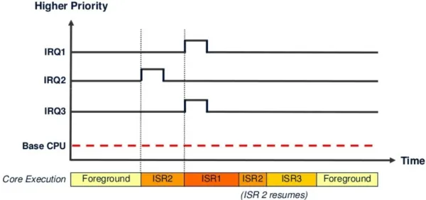
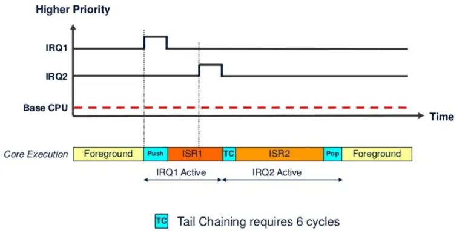
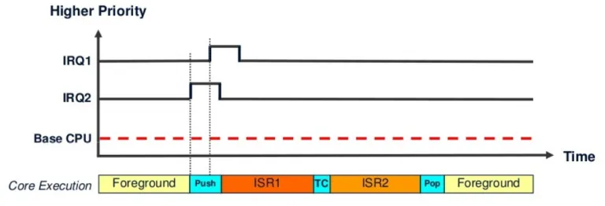
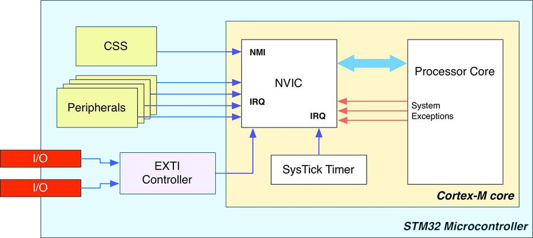
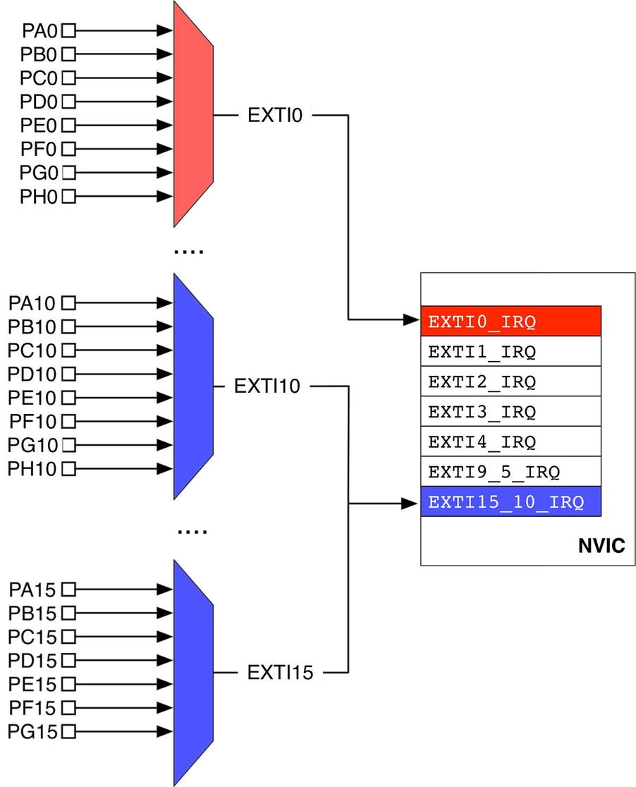
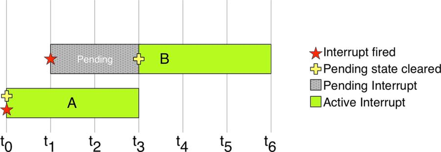
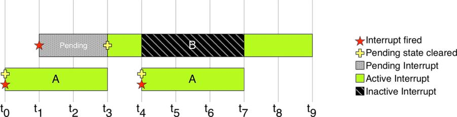
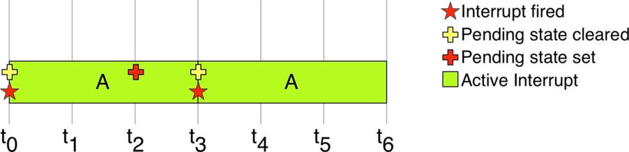

The current executing application on a processor can be interrupted by either internal system exception or external interrupt. Whenever the processor meets an exception or interrupt, the core will stop the application code, change its mode to "Handler mode" to process that event. Cortex-M processors have 15 system Exceptions and 240 Interrupts.
The current executing application on a processor can be interrupted by either internal system exception or external interrupt. Whenever the processor meets an exception or interrupt, the core will stop the application code, change its mode to “Handler mode” to process that event.
Cortex-M processors have 15 system Exceptions and 240 Interrupts.
The exception is waiting to be serviced by the processor. An interrupt request from a peripheral or from software can change the state of the corresponding interrupt to pending.
Active
An exception that is being serviced by the processor but has not completed. Note: An exception handler can interrupt the execution of another exception handler. In this case both exceptions are in the active state.
Active and pending
The exception is being serviced by the processor and there is a pending exception from the same source
Whenever an interrupt happens, the processor stops the current code, and handle the interrupt by running an Interrupt Service Routines (ISR) which is located in a pre-defined table called Vector Interrupt Table (VIC).
The Vector Interrupt Table defines different types with priority of handling order as below:
Exception Number
IRQ Number
Exception Type
Priority
Function
1
-15
Reset
-3, the highest
Reset
2
-14
NMI
-2
Non-Maskable Interrupt
3
-13
Hard Fault
-1
All faults that hang the processor
4
-12
Memory Fault
Configurable
Memory issue
5
-11
Bus Fault
Configurable
Data Bus issue
6
-10
Usage Fault
Configurable
Instruction/State/Access issue
7 ~ 10
Reserved
—
Reserved
11
-5
SVCall
Configurable
System Service Call when call SVC instruction
12
Debug
Configurable
Debug monitor (via SWD)
13
Reserved
—
Reserved
14
-2
PendSV
Configurable
For context switching in an OS
15
-1
SysTick
Configurable
System Timer
16 ~ 255
0~239
Interrupt (IRQ)
Configurable
Interrupt Request by a peripheral, or software request
IRQ Number
To simplify the software layer, the CMSIS only uses IRQ numbers and therefore uses negative values for exceptions other than interrupts. The IPSR returns the Exception number.
Exception priorities
All exceptions have an associated priority: A lower number value indicating a higher priority. If software does not configure any priorities, then all exceptions with a configurable priority have a priority of 0. Configurable priority values are in the range 0-15.
Rule of order of execution:
Higher priority (as the same as lower number) runs first
If the same priority in pending, the lowest exception number takes precedence
When the processor is executing an exception handler, the exception handler is preempted
if a higher priority exception occurs. If an exception occurs with the same priority as the exception being handled, the handler is not preempted, irrespective of the exception number. However, the status of the new interrupt changes to pending.
The Vector Interrupt Table is implemented in assembly code in the startup file of MCU startup_*.s.
.section.isr_vector,"a",%progbits.typeg_pfnVectors,%object.sizeg_pfnVectors,.-g_pfnVectorsg_pfnVectors:.word_estack/* MSP value */.wordReset_Handler/* Reset routine */.wordNMI_Handler/* No-Maskable Interrupt */.wordHardFault_Handler/* System faults */.wordMemManage_Handler/* Memory access issues */.wordBusFault_Handler/* Bus access issues */.wordUsageFault_Handler/* Instruction/State issues */.word0.word0.word0.word0.wordSVC_Handler/* System Service Call */.wordDebugMon_Handler/* Serial Wire Debug */.word0.wordPendSV_Handler/* Context Switching */.wordSysTick_Handler/* System Timer */.wordWWDG_IRQHandler/* Window Watchdog interrupt */.wordPVD_IRQHandler/* EXTI Line 16 interrupt / PVD through EXTI */...
For convention, the vector table starts at the hardware address 0x00000000 in all Cortex-M based processors. If the vector table resides in the internal flash memory (this is what usually happens), and since the flash in all STM32 MCUs is mapped from 0x08000000 address, alias is used when Boot mode is from Flash to map 0x08000000 to 0x00000000 at CPU boot up.
Entry zero of this array is the address of the Main Stack Pointer (MSP) inside the SRAM. Usually, this address corresponds to the end of the SRAM _estack.
When the processor is executing an exception handler, an exception can preempt the exception handler if its priority is higher than the priority of the exception being handled.When one exception preempts another, the exceptions are called nested exceptions.
Preemption example with IRQ1 > IRQ2 > IRQ3
Tail-chaining
This mechanism speeds up exception servicing. When an interrupt (exception) is fired, the main (foreground) code context is saved (pushed) to the stack and the processor branches to the corresponding interrupt vector to start executing the ISR handler. At the end of the ISR, the context saved in the stack is popped out, so the processor can resume the main (foreground) code instructions. However, and if a new exception is already pended, the context push & pop are skipped. And the processor handler the second ISR without any additional overhead.
Tail-chaining when IRQ2 comes while IRQ1 is executing
Late-arriving:
This mechanism speeds up preemption. If a higher priority exception occurs during state saving for a previous exception, the processor switches to handle the higher priority exception and initiates the vector fetch for that exception. State saving is not affected by late arrival because the state saved is the same for both exceptions. Therefore, the state saving continues uninterrupted. The processor can accept a late arriving exception until the first instruction of the exception handler of the original exception enters to execute stage of the processor. On return from the exception handler of the late-arriving exception, the normal tail-chaining rules apply.
Late arrival is detected when IRQ1 comes while IRQ2 is about to start
Return
This occurs when the exception handler is completed, and:
There is no pending exception with sufficient priority to be serviced
The completed exception handler was not handling a late-arriving exception
By default, not all exceptions and interrupts are enabled to be handled.
Exception
Default state
Handling behavior
Reset
Always enabled
Asynchronous
NMI
Always enabled
Asynchronous
Hard Fault
Always enabled, can be masked
-
Memory Fault
Disabled by default
Synchronous
Bus Fault
Disabled by default
Synchronous
Usage Fault
Disabled by default
Synchronous
SVC
Always enabled
Synchronous
Debug
Disabled by default
Synchronous
PendSV
Disabled by default
Asynchronous
SysTick
Disabled by default
Asynchronous
Interrupts
Disabled by default
Asynchronous
For an asynchronous exception other than reset, the processor can execute another instruction between when the exception is triggered and when the processor enters the exception handler.
Nested Vectored Interrupt Controller (NVIC) is a method of prioritizing interrupts, improving the MCU’s performance and reducing interrupt latency. NVIC also provides implementation schemes for handling interrupts that occur when other interrupts are being executed or when the CPU is in the process of restoring its previous state and resuming its suspended process.
NVIC module in STM32 MCUs
Components that are connected to NVIC inlcude:
Clock Security System (CSS) interrupt is connected to Non-Maskable Interrupt (NMI) lines
Peripheral interrupts are connected to Interrupt Requests (IRQ) lines
GPIO interrupts are connected to an External Interrupt/Event Controller (EXTI) before connecting to the IRQ lines
External Interrupts are grouped by lines which connect to GPIO. As processor may have many GPIOs, an EXTI line is shared by multiple pins. In one line (group), only one pin can be set to generate interrupt, and software must be able to discriminate which lines generated the interrupt.
External Interrupt lines
NVIC provides a wide range of register to configure up to 240 interrupts. The IRQ Numbers is defined in the The Vector Interrupt Table.
STM32 interrupts are both level-sensitive and pulse-sensitive. Pulse interrupts are also described as edge-triggered interrupts. The external interrupt can be fired on rising edge, or falling edge, or both.
A level-sensitive interrupt is held asserted until the peripheral de-asserts the interrupt signal. Typically, this happens because the ISR accesses the peripheral, causing it to clear the interrupt request.
A pulse interrupt is an interrupt signal sampled synchronously on the rising edge of the processor clock. To ensure the NVIC detects the interrupt, the peripheral must assert the interrupt signal for at least one clock cycle, during which the NVIC detects the pulse and latches the interrupt.
When an interrupt takes place, the most of STM32 peripherals assert a specific signal connected to the NVIC, which is mapped in the peripheral memory through a dedicated bit. This Peripheral Pending bit will be held high until it is manually cleared by the application code.
The ISR Pending bit is different to the Peripheral Pending bit:
When the processor starts servicing the ISR, the ISR pending bit is cleared automatically
The peripheral pending bit will be held high until it is cleared by the application code:
If the Peripheral Pending bit is not clear, the interrupt will be fired again and the ISR will run again
It is able to manually set the Peripheral Pending bit to force the ISR run
either be pending (a request is waiting to be served) or not pending;
either be in an active (being served) or inactive state.
When an exception fires, it is marked as pending until the processor can serve it. If no other exception is currently being processed, it’s pending state is automatically cleared by the processor, then it starts get served.
ISR A then ISR B
The lower priority ISR has to wait in pending state until no higher priority ISR is being processed. It can be put into inactive state when it is preempted by a higher priority ISR.
ISR A preempts ISR B
An exception can be forced to fire again
during its execution, simply setting its pending bit again. However, the executing exception will complete before re-calling itself.
ISR A preempts ISR B
In the same way, the execution of an exception can be canceled clearing its pending bit while it is in pending state.
When an exception occurs, the current instruction stream is stopped and the processor accesses the exceptions vector table:
The vector address of that exception is loaded from the vector table.
The exception handler starts to be executed in handler mode.
The exception handler returns to main (assuming no further nesting).
Here are more details:
Interrupt Stacking (Context Saving)
The processor will finish the current instruction as long as it’s not a multi-cycle instruction
The processor state (context) is automatically saved to the stack. Eight registers are pushed (PC, R0-R3, R12, LR, xPSR and FPU registers).
During or after context saving, the address of the corresponding ISR is loaded from the exception/interrupt vector table
The link register is modified for return after interrupt
The first instruction of the ISR starts to be executed by the CPU. For Cortex-M3/M4, the whole latency this process takes is 12 cycles. However, IRQ latency is improved if late-arrival or tail-chaining has occurred.
Interrupt Service Routine (ISR) Handling
ISR should clear the interrupt source flag if required
Interrupt nesting won’t affect the way the ISR is written however, attention should be paid to the main stack overflow that may occur.
Given that certain exceptions/interrupts are to be serviced hundreds or thousands of times per second. So it must run so quickly and no delays are permitted within ISR handlers
Return From ISR (Context Restoration)
Detect tail-chaining interrupt, if you have, call to the ISR without restoring the context to speed up
The EXC_RETURN instruction is fetched and gets executed to restore the PC and pop the CPU registers.
The return from interrupt (context restoration) on ARM Cortex-M3/M4 requires 10 clock cycles